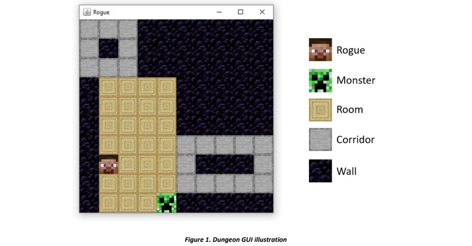

Rogue Game Demo
Data Structure & Algorithm — Individual Project
Overview
Rogue Game Demo is a Java-based rogue-style dungeon game demo that explores object-oriented design and algorithm-driven gameplay. The game simulates an intelligent chase scenario where a monster pursues a rogue using pathfinding while the rogue attempts to survive by making strategic movmenet decisions based on the dungeon layout.
Tech Stack
- Java
- Pathfinding
- Object-Oriented Design
Screenshots

Project Details
System Architecture & Design
The project is built on a strong object-oriented foundation. I designed the dungeon as an extension of a weighted graph structure, where rooms and corridors act as vertices and their connections as edges. This abstraction allows core graph algorithms to be resued efficiently while keeping the system modular and scalable.
Graph-Based Dungeon Representation
By modeling the dungeon as a graph, I enabled advanced operations such as shortest path calculation and cycle detection. This design plays a central role in driving both the monster's pursuit behavior and the rogue's survival strategy.
Graphical User Interface
To improve usability and visualization, I implemented a graphical interface using Java Swing and AWT. The GUI renders the dungeon with textured tiles and updates dynamically as the game progresses, allowing users to clearly observe character movement and interactions.
Monster Pathfinding AI
The monster's behavior is driven by Dijkstra's algorithm, which ensures it always follows the shortest path toward the rogue. I selected this approach after comparing alternatives such as BFS and A*, prioritizing accuracy and consistency in a weighted graph environment.
Rogue cycle-finding AI
The rogue follows a more sophisticated strategy focused on survival rather than direct movement. It analyzes the dungeon to detect cycles and determine safe zones. Depending on the situation, the rogue may navigate toward a cycle, remain within it to avoid capture, or maximize survival time when escape is not possible. These behaviors adapt dynamically to different dungeon maps. The algorithm used to find the cycle is a modified version of Dijkstra's algorithm, where the edge between the start and end point is cut off (weighted 0).
Algorithm Optimization & Performance
I optimized performance by reducing redundant computations and leveraging efficient data structures such as priority queues. The project also includes a detailed time complexity analysis, evaluating different algorithmic approaches and justifying the final design choices.
Gameplay Logic & Simulation
The game operates as a turn-based simulation where the monster and rogue act sequentially. The system handles movement, win/lose conditions, and interaction logic, providing clear feedback through the interface when the game ends.